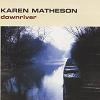

Celtic Lyrics Corner > Artists & Groups > Karen Matheson > Downriver > Singing In The Dark
|  | Singing In The Dark |
| Credits : | James Grant |
| Appears On : | Downriver |
| Language : | English |
Lyrics :
All your burned bum notes
Thistle in your throat, you've gone the distance
You hear them laugh
Skip along the path of least resistance
Chorus
:
You won't break nobody's heart
Singing in the dark while no one listens
You won't break nobody's heart
Singing in the dark, you need a witness
To your song
Crow on your shoulder
Looks down over the dead umbrellas
Smile on his face
There but for the grace of God go I
(Chorus)
All your still born songs
Never sung along, kept in cages
Sing them all to me
Play your masterpiece
For blank pages
Won't break nobody's heart
Singing in the dark while no one listens
You won't break nobody's heart
Singing in the dark, you need a witness
(Chorus)